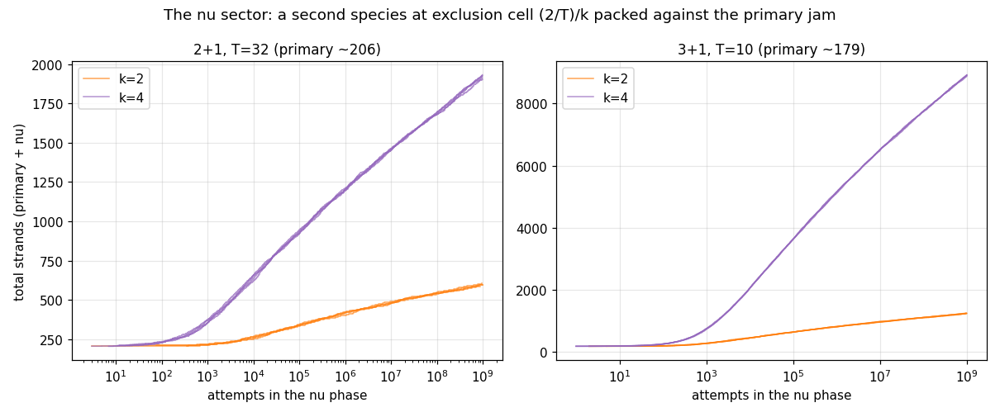
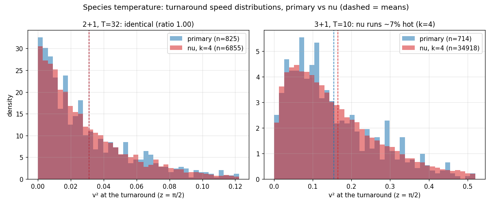

The ν-sector experiment: a weakly-coupled second species packs below naive scaling, never jams, and carries no relic temperature at large T
Motivation: does the model have an analog of the thermodynamic role neutrinos play — a weakly-coupled relic sector with its own temperature? Measured answers:
- Capacity undershoots naive measure-scaling. Naively a k× smaller exclusion cell means kd more room. Measured ν/primary ratios: 2+1 T=32: 1.9× at k=2 (47% of naive), 8.3× at k=4 (52%); 3+1 T=10: 5.9× at k=2 (74%), 49× at k=4 (77%). The frozen primary jam wastes more of the fine-grained configuration space in 2+1 than in 3+1 — the same extra-room story as the knot staircase law.
- The ν sector never jams. Admissions per decade of ν-phase attempts are near-constant after the burst (2+1 k=4: 271/247/237/228; 3+1: 1518/1343/1257/1170) — logarithmic filling again, so the ratios above are depth-conditional lower bounds. The k=1 controls confirm the primary itself is deeply stalled (+4–7 admissions in a second 109).
- No relic temperature at large T — a small selection heating at small T. At T=32 the ν sector's turnaround ⟨v²⟩ matches the primary's to 0.3% (ratio 1.00) at both couplings; at T=10 it runs consistently hot: +4% (k=2), +7% (k=4). Both species' comoving anchors stay exactly uniform (a₁ sd 0.5775 vs 1/√3).


Interpretation. In the full-spectrum model the instantaneous speed is a central-limit sum of ~T terms, so admission selection has a kinematic lever of order 1/T: at large T any RSA-selected subpopulation — whatever its coupling or admission epoch — lands on the same w = d/(6T) dust law, and the ν sector decouples with no temperature memory. At small T the lever is real: squeezing into a frozen jam's gaps selects wigglier worldlines, and the decoupled sector comes out measurably hot. So the model's closest analog to the cosmic-neutrino thermodynamic role remains the 1/T radiation floor in w(z) — a resolution-set relic component — while coupling strength per se turns out to be thermodynamically inert in the continuum direction. Follow-ups queued: a k-ladder (8, 16) for the naive-fraction trend, a T-ladder on the heating effect (does it die as 1/T?), and interleaved rather than sequential two-species packing (the decoupling-order knob).